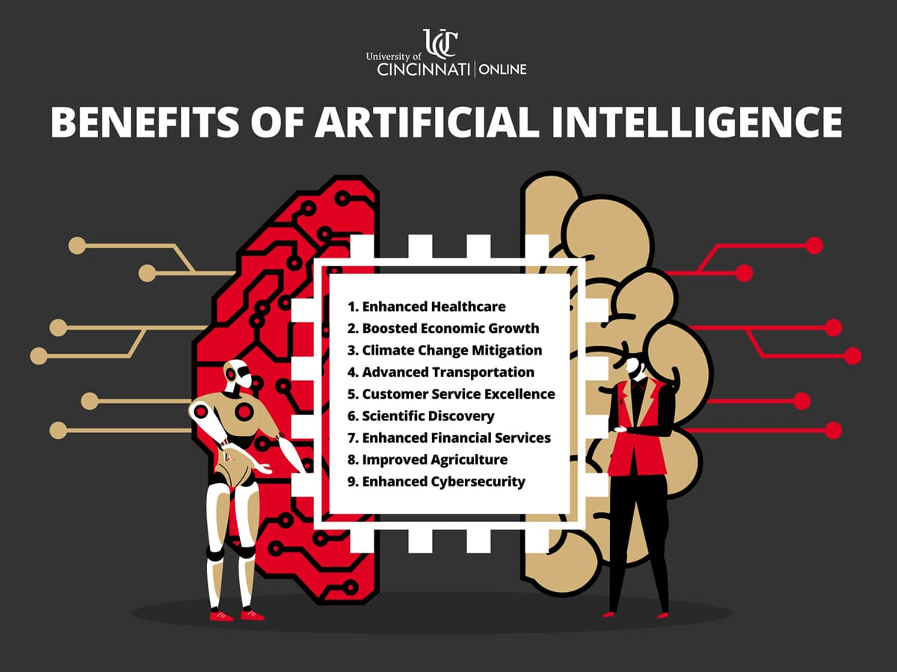
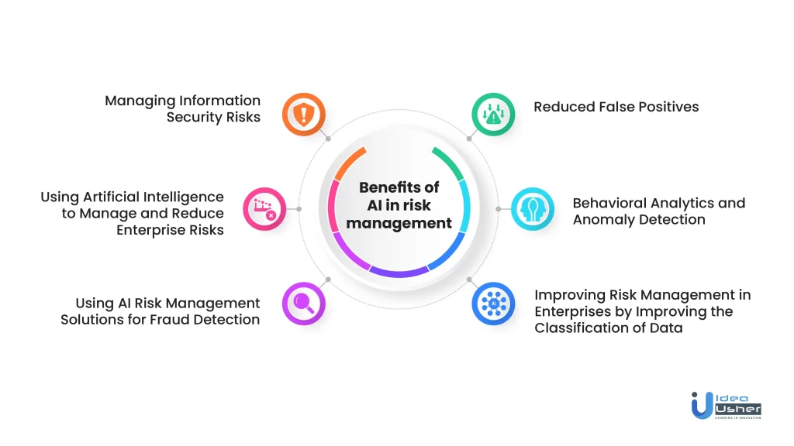
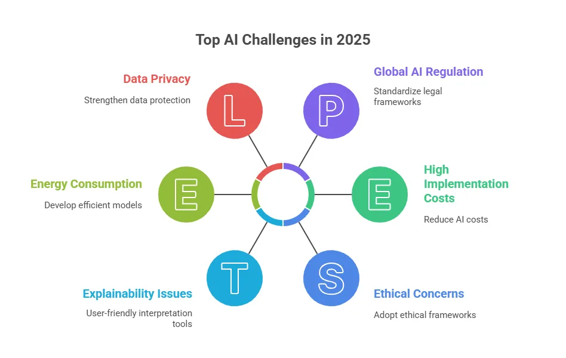

AI's Future: Opportunities and Challenges
The advancement of AI promises remarkable benefits but also raises important concerns. Here is a balanced perspective:
Potential Benefits

Overview: AI driving progress across Healthcare, Economy, and Science
- Reduced Human Error: Automated systems perform critical tasks with higher accuracy. (Tableau)
- Continuous Operation: AI technologies function around the clock without fatigue. (EU Council)
- Cost Efficiency: Smarter processes lower expenses across industries. (Tableau)
- Fairer Decisions: Properly designed AI can reduce bias in decision-making. (NIH)

Deep Dive: Utilizing AI for enhanced security and risk management
Associated Risks
- Bias and Inequality: Poor training data may lead to discriminatory outcomes. (EU Council)
- Decline in Human Skills: Overdependence on AI could weaken critical thinking. (Virginia Tech)
- Unpredictable Risks: Advanced AI systems may pose unforeseen dangers. (NTIA)
- Job Displacement: Automation could replace certain roles, requiring workforce adaptation. (Virginia Tech)

The Hurdles: Key challenges for 2025 and beyond
Striking the right balance will be essential to maximize AI’s benefits while minimizing its risks.